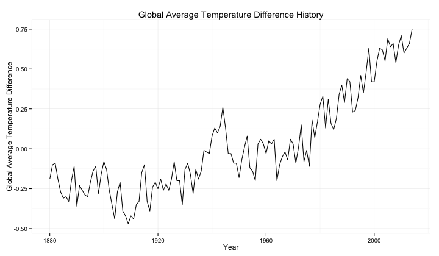
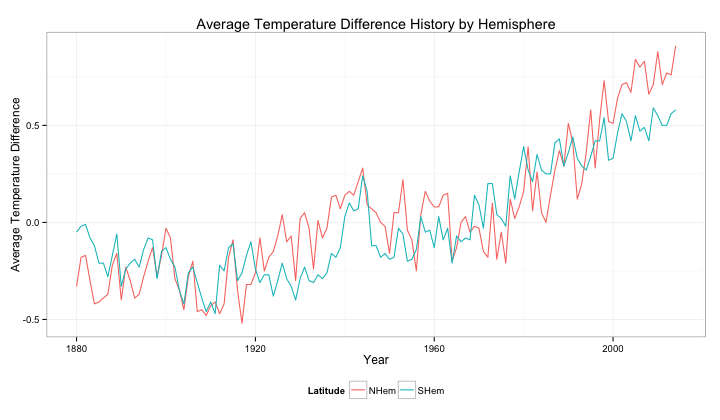
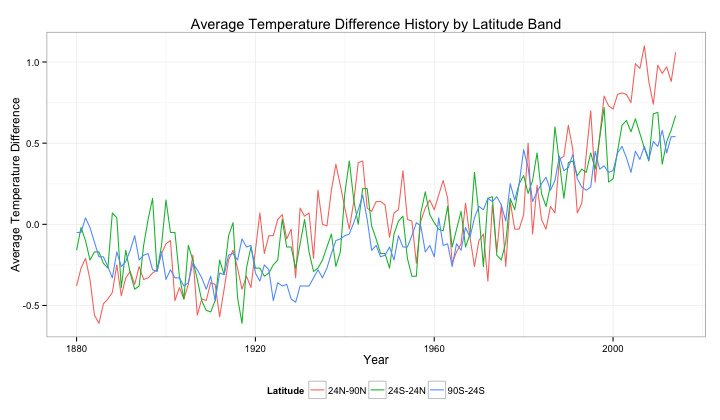
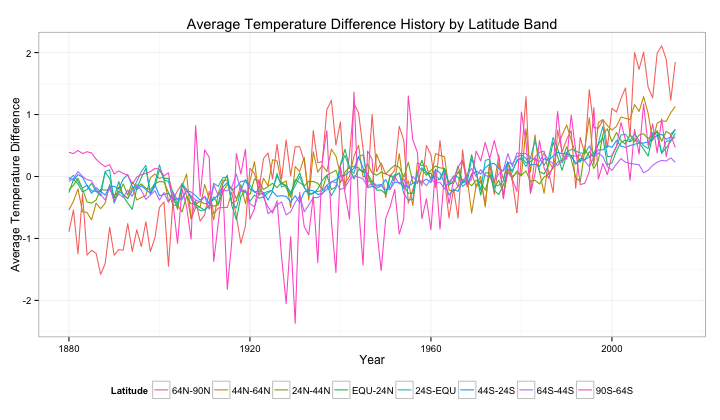
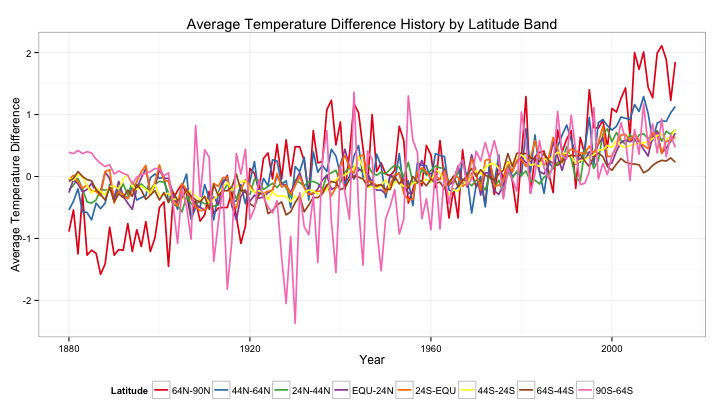
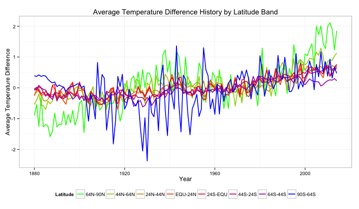
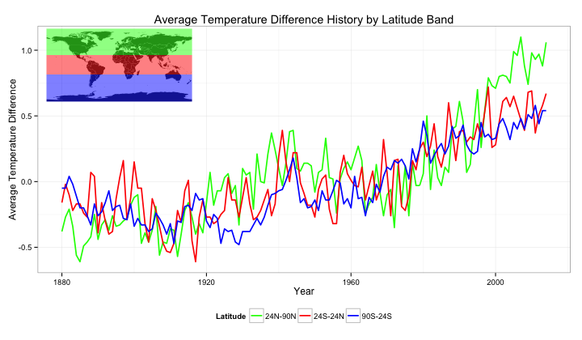
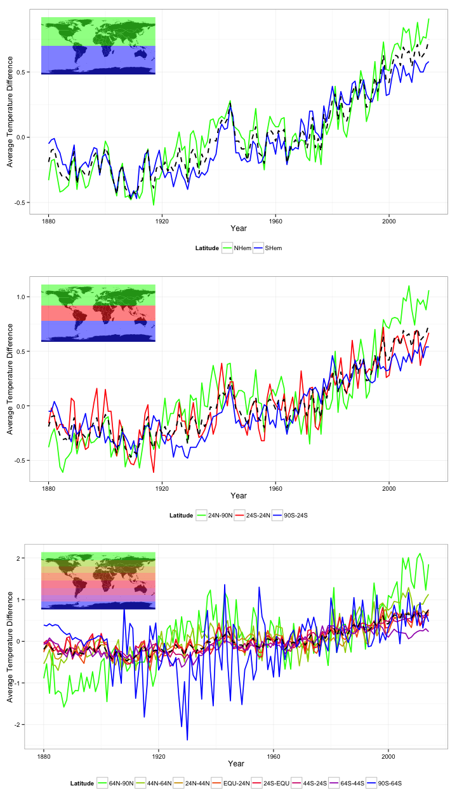

Data Visualisation Assignment 1
1 The Tools
This assignment was completed using R, and the R libraries ggplot2, reshape2, grid, and maptools. The assigment has further been completed as a literate programming exercise using org mode. .
2 Understanding and Preparing the Data
The first step in creating this visualisation was understanding the data. This was achieved by first loading the data into the workspace, and calling the head() function, which allows the first few lines of the data to be previewed.
data <- read.csv('./ExcelFormattedGISTEMPData2CSV.csv') head(data)
| Year | Glob | NHem | SHem | X24N.90N | X24S.24N | X90S.24S | X64N.90N | X44N.64N | X24N.44N | EQU.24N | X24S.EQU | X44S.24S | X64S.44S | X90S.64S |
|---|---|---|---|---|---|---|---|---|---|---|---|---|---|---|
| 1880 | -19 | -33 | -5 | -38 | -16 | -5 | -89 | -54 | -22 | -26 | -5 | -2 | -8 | 39 |
| 1881 | -10 | -18 | -2 | -27 | -2 | -5 | -54 | -40 | -14 | -5 | 2 | -6 | -3 | 37 |
| 1882 | -9 | -17 | -1 | -21 | -10 | 4 | -125 | -20 | -3 | -12 | -8 | 3 | 8 | 42 |
| 1883 | -19 | -30 | -8 | -34 | -22 | -2 | -28 | -57 | -20 | -25 | -19 | -1 | 0 | 37 |
| 1884 | -27 | -42 | -12 | -56 | -17 | -11 | -127 | -58 | -41 | -21 | -14 | -15 | -5 | 40 |
| 1885 | -31 | -41 | -21 | -61 | -17 | -20 | -119 | -70 | -43 | -11 | -23 | -27 | -7 | 38 |
So we have time-series data, reported annually. The first column represents the time dimension, and other columns represent average temperatures accross various latitude bands. Actually what are those numbers? Inspection of this accompanying data file shows that these actually represent the difference in hundredths of a degree. Let's convert this into actual degrees celcius to make it a little easier to understand. Also, something has gone wrong with the formatting of the titles. We will fix this up also.
data[, 2:15] <- data[, 2:15] / 100 # scale temperatures names(data) <- gsub('[.]', '-', gsub('X', '', names(data))) # replace '.' with '-' and remove X's head(data)
| Year | Glob | NHem | SHem | 24N-90N | 24S-24N | 90S-24S | 64N-90N | 44N-64N | 24N-44N | EQU-24N | 24S-EQU | 44S-24S | 64S-44S | 90S-64S |
|---|---|---|---|---|---|---|---|---|---|---|---|---|---|---|
| 1880 | 13.81 | 13.67 | 13.95 | 13.62 | 13.84 | 13.95 | 13.11 | 13.46 | 13.78 | 13.74 | 13.95 | 13.98 | 13.92 | 14.39 |
| 1881 | 13.9 | 13.82 | 13.98 | 13.73 | 13.98 | 13.95 | 13.46 | 13.6 | 13.86 | 13.95 | 14.02 | 13.94 | 13.97 | 14.37 |
| 1882 | 13.91 | 13.83 | 13.99 | 13.79 | 13.9 | 14.04 | 12.75 | 13.8 | 13.97 | 13.88 | 13.92 | 14.03 | 14.08 | 14.42 |
| 1883 | 13.81 | 13.7 | 13.92 | 13.66 | 13.78 | 13.98 | 13.72 | 13.43 | 13.8 | 13.75 | 13.81 | 13.99 | 14 | 14.37 |
| 1884 | 13.73 | 13.58 | 13.88 | 13.44 | 13.83 | 13.89 | 12.73 | 13.42 | 13.59 | 13.79 | 13.86 | 13.85 | 13.95 | 14.4 |
| 1885 | 13.69 | 13.59 | 13.79 | 13.39 | 13.83 | 13.8 | 12.81 | 13.3 | 13.57 | 13.89 | 13.77 | 13.73 | 13.93 | 14.38 |
Much better.
3 Visualising
So we esentially have three dimensions to the data:
- Time: this is given in years, and therefore of a discrete quantitative type.
- Latitude band: this is a little bit more complex of a field, but would fall under the ordinal data type as an order can be given, but there are not event distances between them.
- We could also break this dimension down into two continuous fields: the minimum and maximum of each latitude band.
- Temperature: a continuous field.
So we should choose carefully a visualisation technique to best display this data, keeping in mind the best ways to show each of the types of data required. Since position is the strongest indicator for a quantitative field, it would be ideal to assign our x and y axes to time and temperature.
3.1 Line Plot
One obvious choice to plot this data would be to use a line chart with the independent time variable on the x-axis, and the dependent temperature variable on the y-axis. A colour scale would be shown to represent the latitude, and separate plots rendered using each of the following lattitude groups:
- Global
- Northern and Southern Hemispheres
- 24oN - 90oN, 24oS - 24oN, 90oS - 24oS
- 64oN - 90oN, 44oN - 64oN, EQU - 24oN, 24oS - EQU, 44oS - 24oS, 64oS - 44oS, 90oS - 64oS
This representation has the advantage of using position to indicate the value of the quantitative fields. It also leverages a well-established convention of having time-series data represented with time on the x-axis.
The following sections outline the basics of producing such plots for each latitude group.
3.1.1 Global Temperature History
p <- ggplot(data=data, aes(x=Year, y=Glob)) + geom_line() + ylab("Global Average Temperature Difference") + ggtitle("Global Average Temperature Difference History") + theme_bw() print(p)

3.1.2 Temperature History by Hemisphere
hemisphere_data <- melt(data[, c(1, 3, 4)], id="Year", value.name="Temperature", variable.name="Latitude") p <- ggplot(data=hemisphere_data, aes(x=Year, y=Temperature, color=Latitude)) + geom_line() + ylab("Average Temperature Difference") + ggtitle("Average Temperature Difference History by Hemisphere") + scale_colour_hue() + theme_bw() + theme(legend.position="bottom") print(p)

3.1.3 Temperature History by Latitude
lat3_data <- melt(data[, c(1, 5, 6, 7)], id="Year", value.name="Temperature", variable.name="Latitude") p <- ggplot(data=lat3_data, aes(x=Year, y=Temperature, color=Latitude)) + geom_line() + ylab("Average Temperature Difference") + ggtitle("Average Temperature Difference History by Latitude Band") + scale_colour_hue() + theme_bw() + theme(legend.position="bottom") print(p)

lat8_data <- melt(data[, c(1, 8, 9, 10, 11, 12, 13, 14, 15)], id="Year", value.name="Temperature", variable.name="Latitude") p <- ggplot(data=lat8_data, aes(x=Year, y=Temperature, color=Latitude)) + geom_line() + ylab("Average Temperature Difference") + ggtitle("Average Temperature Difference History by Latitude Band") + scale_colour_hue() + theme_bw() + theme(legend.position="bottom") print(p)

It would appear that dividing latitudes into 8 groups is too many. The colours become "cluttered", and become difficult to distinguish. A possible solutions is to use a different colour scheme, taken from Color Brewer, and to slightly increase the line weight.
lat8_data <- melt(data[, c(1, 8, 9, 10, 11, 12, 13, 14, 15)], id="Year", value.name="Temperature", variable.name="Latitude") p <- ggplot(data=lat8_data, aes(x=Year, y=Temperature, color=Latitude)) + geom_line(size=0.8) + ylab("Average Temperature Difference") + ggtitle("Average Temperature Difference History by Latitude Band") + scale_color_brewer(palette="Set1") + theme_bw() + theme(legend.position="bottom") print(p)

However, even this is still difficult to read, and the ordering between latitude bands is lost. Another solution is to use a defined colour range to represent latitude. Let's use blue-to-red to represent the southern hemisphere, and red-to-green to represent the northern hemisphere.
lat8_data <- melt(data[, c(1, 8, 9, 10, 11, 12, 13, 14, 15)], id="Year", value.name="Temperature", variable.name="Latitude") colours <- scales::gradient_n_pal(c("green", "red", "blue"), space="Lab")(seq(0,1,length.out=8)) p <- ggplot(data=lat8_data, aes(x=Year, y=Temperature, color=Latitude)) + geom_line(size=0.8) + ylab("Average Temperature Difference") + ggtitle("Average Temperature Difference History by Latitude Band") + scale_color_manual(values=colours) + theme_bw() + theme(legend.position="bottom") print(p)

We are pushing the boundaries a little here, but this looks to be the best solution. It is a little difficult to tell between specific latitude bands, but we can roughly tell the latitude we are looking at.
3.2 Bringing Context to the Legend
Although the legend technically gives the reader all the information about the latitude band of each temperature average, it is quite difficult to interpret what each colour actually means. This can be rectified by showing a physical map, highlighting with the plot colour the regions over which the temperature is averaged.
n <- 3 colours <- scales::gradient_n_pal(c("green", "red", "blue"), space="Lab")(seq(0,1,length.out=n)) lat_limits <- c(90, 24, -24, -90) lat_range <- data.frame(upper=head(lat_limits, n), lower=tail(lat_limits, n)) lat3_data <- melt(data[, c(1, 5, 6, 7)], id="Year", value.name="Temperature", variable.name="Latitude") p <- ggplot(data=lat3_data, aes(x=Year, y=Temperature, color=Latitude)) + geom_line(size=0.8) + ylab("Average Temperature Difference") + ggtitle("Average Temperature Difference History by Latitude Band") + scale_colour_manual(values=colours) + theme_bw() + theme(legend.position="bottom") print(p) legend <- ggplot() + geom_polygon(data=wrld_simpl, aes(x=long, y=lat, group=group)) + geom_rect(data=lat_range, aes(ymin=lower, ymax=upper, fill=as.factor(rev(lower))), xmin=-180, xmax=180, alpha=0.5) + coord_cartesian(xlim=c(-180,180), ylim=c(-90,90)) + scale_x_continuous(breaks=seq(-180,180,20)) + scale_y_continuous(breaks=seq(-90,90,10)) + theme(axis.line=element_blank(), axis.text.x=element_blank(), axis.text.y=element_blank(), axis.ticks=element_blank(), axis.title.x=element_blank(), axis.title.y=element_blank(), legend.position="none", panel.background=element_blank(), panel.border=element_blank(), panel.grid.major=element_blank(), panel.grid.minor=element_blank(), plot.background=element_blank()) + scale_fill_manual(values=colours) print(legend, vp=viewport(0.2, 0.8, 0.3, 0.3))

4 Putting it all together
Finally, taking what we have learnt, we can plot the charts for each set of latitude bands above one-another in order to achieve a heirachical view of latitudal average temperatures.
main.plot <- function(columns, lat.limits) { n <- length(columns) colours <- scales::gradient_n_pal(c("green", "red", "blue"), space="Lab")(seq(0,1,length.out=n)) lat.range <- data.frame(upper=head(lat.limits, n), lower=tail(lat.limits, n)) this.data <- melt(data[, c(1, columns)], id="Year", value.name="Temperature", variable.name="Latitude") ggplot(data=this.data, aes(x=Year, y=Temperature, color=Latitude)) + geom_line(size=0.8) + geom_line(data=data[, c(1, 2)], aes(y=Glob), color="black", size=0.9, linetype="dashed") + ylab("Average Temperature Difference") + scale_colour_manual(values=colours) + theme_bw() + theme(legend.position="bottom") } leg.plot <- function(columns, lat.limits) { n <- length(columns) colours <- scales::gradient_n_pal(c("green", "red", "blue"), space="Lab")(seq(0,1,length.out=n)) lat.range <- data.frame(upper=head(lat.limits, n), lower=tail(lat.limits, n)) this.data <- melt(data[, c(1, columns)], id="Year", value.name="Temperature", variable.name="Latitude") ggplot() + geom_polygon(data=wrld_simpl, aes(x=long, y=lat, group=group)) + geom_rect(data=lat.range, aes(ymin=lower, ymax=upper, fill=as.factor(rev(lower))), xmin=-180, xmax=180, alpha=0.5) + coord_cartesian(xlim=c(-180,180), ylim=c(-90,90)) + scale_x_continuous(breaks=seq(-180,180,20)) + scale_y_continuous(breaks=seq(-90,90,10)) + theme(axis.line=element_blank(), axis.text.x=element_blank(), axis.text.y=element_blank(), axis.ticks=element_blank(), axis.title.x=element_blank(), axis.title.y=element_blank(), legend.position="none", panel.background=element_blank(), panel.border=element_blank(), panel.grid.major=element_blank(), panel.grid.minor=element_blank(), plot.background=element_blank()) + scale_fill_manual(values=colours) } print(main.plot(3:4, c(-90, 0, 90)), vp=viewport(0, 1, 1, 0.333, just=c("left", "top"))) print(main.plot(5:7, c(-90, 0, 90)), vp=viewport(0, 0.66667, 1, 0.333, just=c("left", "top"))) print(main.plot(8:15, c(-90, 0, 90)), vp=viewport(0, 0.333, 1, 0.333, just=c("left", "top"))) print(leg.plot(3:4, c(-90, 0, 90)), vp=viewport(0.06, 1-0.01, 0.3, 0.1, just=c("left", "top"))) print(leg.plot(5:7, c(-90, -24, 24, 90)), vp=viewport(0.06, 0.66667-0.01, 0.3, 0.1, just=c("left", "top"))) print(leg.plot(8:15, c(-90, -64, -44, -24, 0, 24, 44, 64, 90)), vp=viewport(0.06, 0.333-0.01, 0.3, 0.1, just=c("left", "top")))

Great. In the above plots we can easily see the average temperature difference for varying latitude ranges. I have also put the global average in black. I have put this value in black, and a slightly heavier weight to have it stand out and appear separate from the other data, but also used a dashed line so that it doesn't dominate the plots.
These plots help us to easily see some of the trends within the data. For example, we can see that northern regions have had the greatest increase in average temperature accross the globe, and that the average temperature around the poles tends to vary a lot more than around the equator.